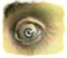
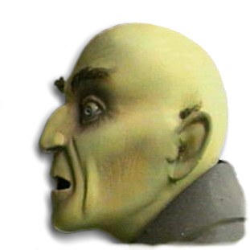

I always wait to do the eyes until I am almost finished with the skin
tones, but preferably before attaching the head on the body. I start
by applying the whites. As you probably know the "Whites" are not white
but rather white with a touch of dull blue-gray. Some people suggest
brownish tones in the eyes, but you won't get the best contrast and
transparency when applying the reddish tones in the finishing stages.
Since I always use Humbrol paints for details that are going to be
blended, I make a small mix of the flat white and a small drop of
Tarmac #112. I make the mix fairly light and cover the entire area of
the visible eyeball and also the corners. After a few hours (or after
a few minutes under the hair dryer) I make a new and darker mix of the
white and Tarmac colors. I dilute them with some white spirits and
apply a thin but paintable (not flowing) wash into the corners of the
eye. I try to make the eyes deeper by enhancing the "ball shape" of the
eye.
I always wait to do the eyes until I am almost finished with the skin
tones, but preferably before attaching the head on the body. I start
by applying the whites. As you probably know the "Whites" are not white
but rather white with a touch of dull blue-gray. Some people suggest
brownish tones in the eyes, but you won't get the best contrast and
transparency when applying the reddish tones in the finishing stages.
Since I always use Humbrol paints for details that are going to be
blended, I make a small mix of the flat white and a small drop of
Tarmac #112. I make the mix fairly light and cover the entire area of
the visible eyeball and also the corners. After a few hours (or after
a few minutes under the hair dryer) I make a new and darker mix of the
white and Tarmac colors. I dilute them with some white spirits and
apply a thin but paintable (not flowing) wash into the corners of the
eye. I try to make the eyes deeper by enhancing the "ball shape" of the
eye.
 When the paint has set fully (the next day) I start with the iris. To make the appearance of a color shifting, I have found it easier to make a blend were the iris is dark around the edges and lighter in the centre. In the pictures here I have painted a British kit of ol' Nosferatu. His eyes are quite pale, so I choose to make the iris with the same Tarmac color as used to make the whites. "Pale? Tarmac?" you probably say, but wait and see! This color is also excellent to use on blue eyes, just don't blend them as hard as I did here. I first paint a circle which represents the outline of the iris. It is most important to get the balance and the focus of the eyes right at this stage. Using Humbrols you can easily remove the paint, if you didn't get it right, by using a clean brush with some white spirits within a few minutes. When I'm satisfied with the centering of the eyes I completely fill the iris of the first eye with the Tarmac color. And here comes the trick! I clean the brush, dry it off on a cloth until damp and then pick the color back up on the brush just using the dampness of the brush. I start in the center of the iris and then move on to the outer parts picking up the color with the brush as I go and in seconds the blend is completed. Of course you need a steady hand and only use high quality brushes (Hobby brushes banned!). I then move on to the second eye trying to make it look the same. Don't take too long to finish the first eye or the outline will be permanently stuck on the other.
Next step is to put the pupil in the centre of the iris. Wait until the next day so that the color is completely dry. You can then afford to make a few mistakes before you get the pupil in place. A black dot, no big deal. Just try to make it circular and not too small or too big. Nosferatu has small pupils to enhance the paleness of the eyes. Pinhead would have bigger pupils to make the eyes darker.
Time to make the corners a little red and to do the blood vessels. I mix flesh color with red, dilute with some thinner and apply an almost paintable wash to the line of the eyes. Before it dries I soften it with a clean brush damped with thinner. While the eyes are still wet, I paint the blood vessels by barely touching the surface of the eye with the diluted red/flesh color. Since the eye is still wet, the paint kind of floats out and becomes obscure. If you want it more obscure try to feather it out with a clean damp brush.
 The next step is very challenging. It is to give the iris some depth, almost like seeing it through a lens. I stumbled across a thing to make small windows on aeroplane kits, and on the label it said "to make lenses just put a drop on a flat surface and let dry, then peel off". It is Microtools Krystal Clear, a water soluble substance, excellent to make a see-through lens over the iris. I apply a drop with a small brush and work it around the edges of the iris. Before it is dry (within seconds!), I apply another drop so that it looks like a wart or something. Don't be alarmed that the solution is milk-white, it gets clear (but flat) once it is set.
The eye needs a clear lacquer to achieve the correct shine and I again prefer Humbrols Polyurethane Clear for this. It gets a little thick after being used a while and then it is excellent for makeing a thick layer over the eyes. It is of course also possible to achieve the same results by painting multiple layers, but remember to wait a few hours between coats.
I hope these tips will help you to put some soul into your kits, and remember - don't expect to get perfect results the first time. Practice and patience will payoff!
Good luck!
Staffan Linder
The Gremlins in the Garage webzine is a production of Firefly Design. If you have any questions or comments please get in touch.
Copyright © 1994-1997 Firefly Design.